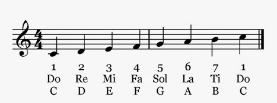

The sounds of circuitry
Quantum circuits are represented by diagrams similar to musical staves. When a musician reads a line of music she begins at moment zero on the left edge and proceeds forward in time by reading to the right. Here we have an example of an ascending C Major scale written in the treble cleff (denoted by the ornate figure on the left edge) in a 4/4 time signature.

Similarly, quantum circuit diagrams are a series of moments in time, beginning at moment zero on the left edge and proceeding forward in time by reading to the right. Here we have a quantum circuit that is 5 moments long and operates on just 2 quantum bits:
Let’s read it from left to right,
observing what happens at each passing moment.
We begin at moment zero (t0) with our initial qubit values.
Both qubit #0 and qubit #1 begin with a value of 0⟩.
This is a “horizontal” qubit state.
In normal quantum circuit design these initial values will always be 0⟩.
Q, however, allows us to manually change these input values
to any possible qubit state
so that you may simulate a snippet of a complete circuit.
We’ll come back to this later, but for now let’s read on.
During our first moment of true operation (t1)
we apply a Hadamard gate to qubit #0
and an Identity gate
(essentially a null operator or “do nothing” gate)
to qubit #1.
This puts qubit #0 in to a superposition state
while leaving qubit #1 as-is.
Similarly, our second moment (t2)
only operates on qubit #0, inverting its superposition
by use of a Pauli X gate.
In our next moment, t3, we finally operate on both qubits at once
by applying a Controlled-Not gate.
This operation will flip the value of qubit #1 if, and only if,
the value of qubit #0 is 1.
At t4 we apply a Pauli Y gate to each qubit.
Finally, at t5 we measure the value of each qubit
which collapses any superpositions to a singular values.
Writing quantum circuits
To create the above circuit we can take advantage of several Q shortcuts.
To beging with, the Q object itself is a function
that internally passess its arguments to the
Circuit.fromText()
static method.
This function can accept text as an argument,
but also accepts
Template literals,
which use backticks rather than single or double quotes,
and do not require parentheses to invoke a function call.
Note the backticks and lack of parentheses in this example.
var ape = Q`
H-X-C0-Y-M
I-I-C1-Y-M
`
Q is rather flexible when it comes to parsing text into circuits. New lines indicate a new qubit to operate on. Within a line, any non-alphanumeric character between alphanumerics is interpreted as a moment seperator. Therefore, the following (less sensible) input creates a circuit identical to the one above.
var ape = Q`H X-C0 Y--M
I I C1 Y M`
Internally, fromText
is making the following calls to create the circuit.
Note the extreme difference between
the very little we must type (above) to create the circuit
and the large amount of construction happening under the hood (below).
// Create a circuit
// that operates on 2 qubits
// and lasts for 5 moments.
var ape = new Q.Circuit( 2, 5 )
// At moment #1 (the first moment we can operate),
// we’ll use a Hadamard gate
// to put the value of qubit #0 in to superposition.
ape.set$( 1, Q.Gate.HADAMARD, [ 0 ])
// At moment #2
// we’ll use a Pauli X gate
// to invert the value of qubit #0.
ape.set$( 2, Q.Gate.PAULI_X, [ 0 ])
// At moment #3
// we’ll use a Controlled-Not gate
// to invert the value of qubit #1
// if the value of qubit #0 is 1.
ape.set$( 3, Q.Gate.CONTROLLED_NOT, [ 0, 1 ])
// At moment #4
// we’ll use a Pauli Y gate
// to rotate the value of qubit #0.
// Then we’ll do the same to qubit #1.
ape.set$( 4, Q.Gate.PAULI_Y, [ 0 ])
ape.set$( 4, Q.Gate.PAULI_Y, [ 1 ])
// Finally, at moment #5
// we’ll use a Measure operation
// to resolve the value of qubit #0.
// And we’ll do the same to qubit #1.
ape.set$( 5, Q.Gate.MEASURE, [ 0 ])
ape.set$( 5, Q.Gate.MEASURE, [ 1 ])
I think you’ll agree the shorter Q syntax is preferable to having to type all of the above.
Inspecting quantum circuits
Let’s create that “ape” circuit again using our compressed Q syntax. (This illustrates yet another small variation on the whitespace and gate separator used in the input Template literal.)
var ape = Q`
H X C0 Y M
I I C1 Y M
`
We can fully inspect our circuit as an object in the JavaScript console, of course. But we can also get a summary overview with the following command.
ape.toText()
This returns the following string.
H-X-C0-Y-M I-I-C1-Y-M
Does that look familiar? It’s very nearly the text we used to construct our circuit in the first place. In fact, because we can both construct and ouput circuits using text we can clone and test for equality between circuits like so.
var bee = Q( ape.toText() )
ape === bee// false.
ape.toText() === bee.toText()// true.
Though in practice you’re far more likely to clone a circuit by using its own method for doing so.
var bee = ape.clone()
ape === bee// false.
ape.toText() === bee.toText()// true.
ASCII circuit diagrams
While outputting a circuit as simple text can be useful, we humans often need a little more visual hand-holding in order to quickly make sense of things. With this in mind, Q offers full-on ASCII circuit diagrams.
ape.toDiagram()
The above command yields the following,
with time labeled from t0 (the moment of input)
progressing onward,
and qubits labeled likewise.
t0 t1 t2 t3 t4 t5
┌───┐┌───┐┌────┐┌───┐┌───┐
q0 |0⟩─┤ H ├┤ X ├┤ C0 ├┤ Y ├┤ M │
└───┘└───┘└┬───┘└───┘└───┘
┌┴───┐┌───┐┌───┐
q1 |0⟩───○────○──┤ C1 ├┤ Y ├┤ M │
└────┘└───┘└───┘
Interactive circuit diagrams
But this is a Web browser—we ought to make use of its
document object model for interactivity, no?!
The toDom() method
returns a document fragment, complete with event handlers,
that can be attached to your live document.
document.body.appendChild( ape.toDom() )
Note that this feature is still in its early stages and is not yet fully functional. Check back in late November 2019 for updates. Better yet, contribute to Q!
Executing quantum circuits
Now what good is a quantum circuit that you cannot run? Let’s do it!
ape.run$() // Runs our circuit.
ape.results // Outputs the results Array.
// Expecting [ 1, 0 ]
// or [ 1, 1 ].
As you can see, running a circuit alters its
results property.
But of course running a quantum circuit one single time
doesn’t tell us much about the curve of probabilities.
Let’s try running our circuit one thousand times
and output the results array immediately.
ape.run$( 1000 ).results
The first element of the results array will remain 1
but now the second value should be closer to 0.5.
Note that these result reflect the early stages of this simulator. Check back in late October 2019 for updates. Better yet, contribute to Q!
Overlapping multi-qubit gates
Some physical architectures allow for interactioins between qubits that don’t resolve in to the simplest diagrams. Take this circuit, for example, which contains two C-not gates at moment 2:
var cat = Q`
H-C00-M
I-C10-M
I-C01-M
I-C11-M
X-I---M`
We can see that they overlap. The first C-not [0] operates on qubit 0 and qubit 2, while the second C-not [1] operates on qubit 1 and qubit 3.
We can see this slightly more clearly as a diagram
with the cat.toDiagram() command:
t0 t1 t2 t3
┌───┐┌─────┐┌───┐
q0 |0⟩─┤ H ├┤ C00 ├┤ M │
└───┘└┬────┘└───┘
┌─────┐┌───┐
q1 |0⟩───○──┤ C10 ├┤ M │
└─┬───┘└───┘
┌┴────┐┌───┐
q2 |0⟩───○──┤ C01 ├┤ M │
└─────┘└───┘
┌─┴───┐┌───┐
q3 |0⟩───○──┤ C11 ├┤ M │
└─────┘└───┘
┌───┐ ┌───┐
q4 |0⟩─┤ X ├───○───┤ M │
└───┘ └───┘
Editing quantum circuits
Copy, cut, paste
Let’s start with the fox circuit above,
and copy a section of it.
In this case we’re copying all of its moments
and all of its qubits
so it is effectively equal to
fox.clone():
var gup = fox.copy({
qubitFirstIndex: 0,
qubitRange: fox.bandwidth,
momentFirstIndex: 0,
momentRange: fox.timewidth
})
Both copy
and cut$
are very flexible with the parameter object.
Supplying no parameters is effectively equal to selecting the entire circuit.
(So the above example is a bit superfluous, but socratic.)
Cutting replaces the “cut” operations with Identity gates and returns the cut portion.
var hen = gup.cut$()
Cutting all of the operations as above
will yield a blank circuit as seen below.
(And hen will now contain those cut operations.)
t0 t1 t2 t3
q0 |0⟩───○────○────○
q1 |0⟩───○────○────○
q2 |0⟩───○────○────○
q3 |0⟩───○────○────○
q4 |0⟩───○────○────○
Pasting in to a circuit can cause that circuit to expand
in both time and qubits.
For example, both our fox
and gup circuits are 4 moments long (0, 1, 2, 3)
and 5 qubits in bandwidth (0, 1, 2, 3, 4).
What if we paste our fox circuit
in to our empty gup circuit
but do so by pushing it one moment further and one qubit further?
gup.paste$( fox, 1, 1 )
Notice how gup has now expanded.
The first qubit registers are still empty.
The first moment of qubits also remains empty.
But the entirety of fox
is now pasted in there.
t0 t1 t2 t3 t4
q0 |0⟩───○────○─────○─────○
┌───┐┌─────┐┌───┐
q1 |0⟩───○──┤ H ├┤ C00 ├┤ M │
└───┘└┬────┘└───┘
┌─────┐┌───┐
q2 |0⟩───○────○──┤ C10 ├┤ M │
└─┬───┘└───┘
┌┴────┐┌───┐
q3 |0⟩───○────○──┤ C01 ├┤ M │
└─────┘└───┘
┌─┴───┐┌───┐
q4 |0⟩───○────○──┤ C11 ├┤ M │
└─────┘└───┘
┌───┐ ┌───┐
q5 |0⟩───○──┤ X ├───○───┤ M │
└───┘ └───┘
More to come! More examples! Revised examples! Check back in November 2019.
Constructor
Description TK.
Static constants
Description TK.
Static properties
-
- index
NumberDescription TK. -
- help
FunctionDescription TK. -
- constants
ObjectDescription TK. -
- createConstant
FunctionDescription TK. -
- createConstants
FunctionDescription TK. -
- fromText
FunctionDescription TK.
Prototype properties
Non-destructive methods
-
- clone
FunctionDescription TK. -
- toTable
FunctionDescription TK. -
- toText
FunctionDescription TK. -
- toDiagram
FunctionDescription TK. -
- toDom
FunctionDescription TK. -
- results
ArrayDescription TK. -
- determineRanges
FunctionDescription TK. -
- copy
FunctionDescription TK.
Destructive methods
-
- ensureMomentsAreReady$
FunctionDescription TK. -
- fillEmptyOperations$
FunctionDescription TK. -
- removeHangingOperations$
FunctionDescription TK. -
- clearThisInput$
FunctionDescription TK. -
- set$
FunctionDescription TK. -
- cut$
FunctionDescription TK. -
- spliceCut$
FunctionDescription TK. -
- paste$
FunctionDescription TK. -
- splicePaste$
FunctionDescription TK. -
- pasteInsert$
FunctionDescription TK. -
- expand$
FunctionDescription TK. -
- trim$
FunctionDescription TK. -
- run$
FunctionDescription TK.